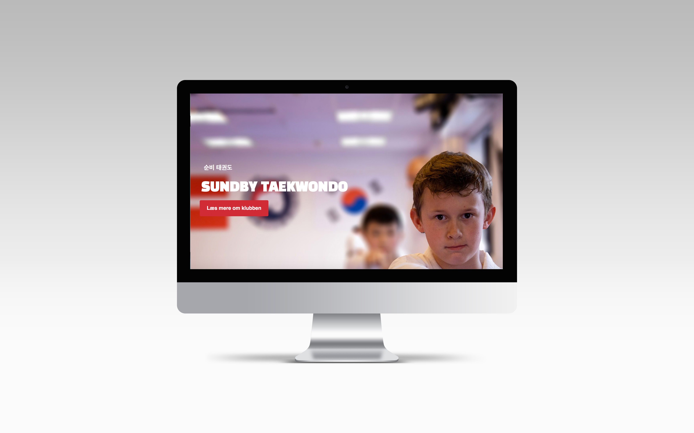
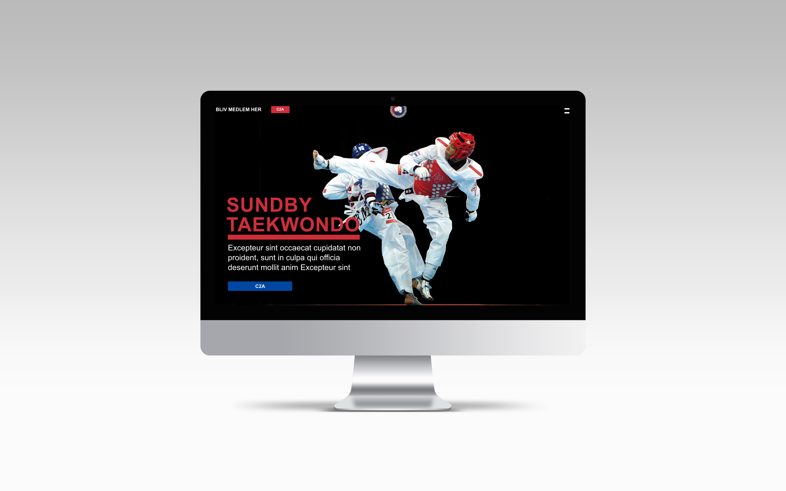
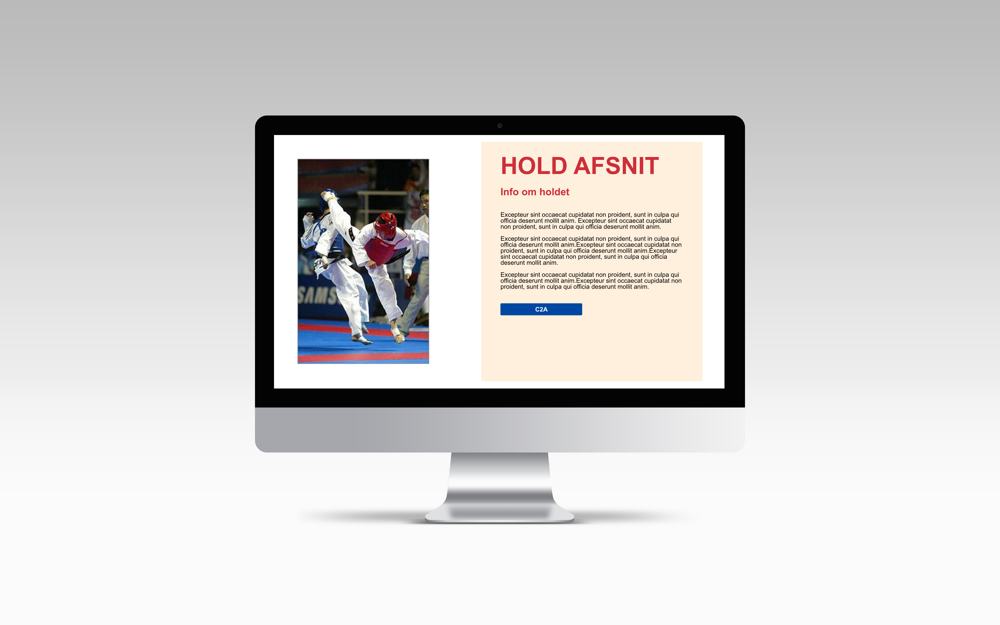

03.02.08
Link til redesign af website
03.02.08 er redesignet af Sundby Taekwondo Klub. På baggrund af den dokumentation samt empiri der er blevet indsamlet i de tidligere faser af temaet, er hjemmesiden blevet redesignet. Projektet er organiseret og styret via Scrum, således at alle projektets deltager kunne kontrollere og regulere deres opgaver.
Websiden er opbygget af seks HTML filer, men kun én style fil og én script fil. CSS og Script filerne bruger genanvendelige regler og classes, således at forskellige HTML filer anvender de samme classes.
Link til opgave →03.02.07 Still-foto
Før arbejdet af redesignet kunne begynde, blev den nuværende hjemmeside analyseret ved hjælp af BERT-test og 5-sekunders test. Test resultaterne påviste at siden var forvirrende, rodet og at brugeren var usikker på hvilken slags organisation der stod bag hjemmesiden.
Redesignet har derfor fokuseret på at hjemmesiden skulle have en tydelig afsender, budskabet skulle være klart og hjemmesiden skulle være enkel uden at gå på kompromis med indholdet. Processen i dette forløb har været forholdsvis lige til, god kommunikation i gruppen har gjort således, at vi altid har været ajour med opgavens krav og afleveringer.
03.02.07 Still-foto
 03.02.08 Synopsis & interviewguide
Præmis
- Sundby Taekwondo Klub er for ALLE, kom og bliv medlem! Log-line - Trænere / medlemmer fortæller om klubben og sportsgrenen. Man ser undervejs en som gør sig klar til træning og derudover ser man sammenholdet, venskabet og træningen i klubben.
Koncept
Videoen tager en dramatisk indgangsvinkel, til en lille lokal Taekwondo klub baseret i Sundby, hvor man ser en person slå og sparke på en sandsæk i ultranær. Videoen fokuserer på klubbens egne værdier som indebære sammenhold, selvudvikling og disciplin. I videoen bliver forskellige trænere og formanden fra klubben interviewet. Interviewpersonerne skal fortælle om deres erindringer fra klubben, forholdet til klubben og klubbens ambitioner. Videoen skal være emotionel og inspirerende, tilskueren skal have lyst til at tilmelde sig klubben efterfølgende. Den visuelle ide pryder af små korte klip, der skal være fart på, ligesom i sporten.